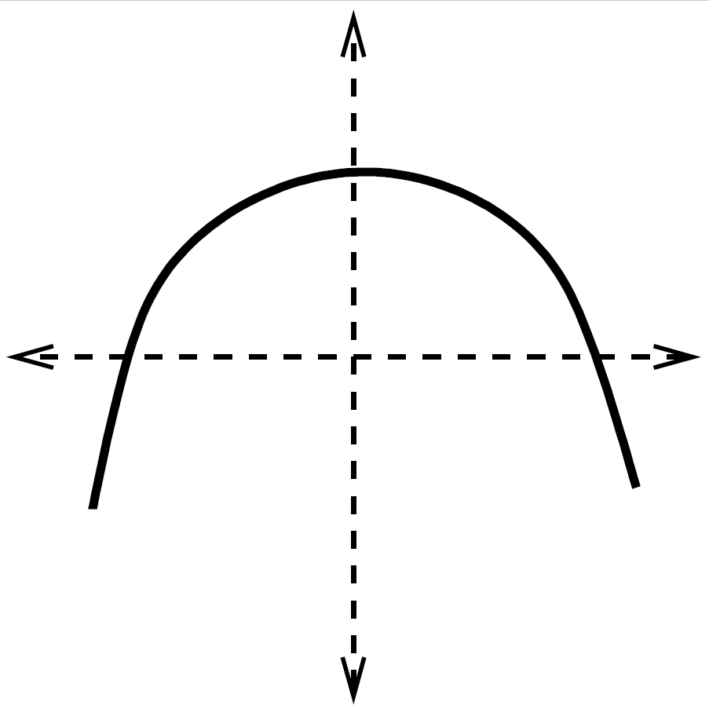

2.8. Worksheet 1: Real functions of a real variable#
Here are some exercises so that you can practice what you should have learned in this chapter. Good luck!
Order the following numbers from smallest to largest. Indicate to which of the following sets each number belongs: natural, integer, rational, or irrational. Note: Indicate only the smallest set to which each number belongs; for example \(2\in \mathbb{N}\) and \(0.5\in \mathbb{Q}\).
Number
\(0.25\)
\(\sqrt{2}\)
\(\dfrac{15}2\)
\(0.102024\)
\(-\sqrt{4}\)
\(\dfrac{12}4\)
\(2.333\dots\)
\(3\)
Set
\(\vphantom{\dfrac{2}{3}}\)
Compute or simplify whenever possible:
\[\begin{split} \begin{array}{llll} \text{(a)} \ln (e) & \text{(b)} \ln (e^2) & \text{(c)} \ln (0) & \text{(d)} \ln (-1) \\ \text{(e)} \ln(2) & \text{(f)} e^0 & \text{(g)} e^{-1} & \text{(h)} e^{\ln (1)} \\ \text{(i)} e^{\ln (e)} & \text{(j)} e^{\ln(e^3)} & \text{(k)} \ln \sqrt{2^3} & \text{(l)} \dfrac{\ln (5x)}{\ln \left( \frac{5}{x} \right)} \\ \text{(m)} \dfrac{\ln (5+x)}{\ln (5-x)} \quad & \text{(n)} \ln (e^2) e^{\ln (5+x) - \ln (5x)} \quad & \text{(ñ)} \ln \left( \dfrac{x^2-1}{x^3} \right)^3 \quad & \end{array} \end{split}\]Solve the following equations:
\[\begin{split} \begin{array}{ll} \text{(a)} \sqrt{x-3}+5=x & \text{(b)} e^{x-3}=30 \\ \text{(c)} 9^{2x+1}=27 & \text{(d)} 10^{5x}=1000 \\ \text{(e)} e^{x^2-1}=9 & \text{(f)} \ln(x-3)=5 \\ \text{(g)} \ln(x+2)+\ln(x-2)=1 \qquad & \text{(h)} \log_3(x^2)-\log_3(2x)=2 \end{array} \end{split}\]Where is the error in the following reasoning?
\(\sqrt{25}=\sqrt{5^2}=5\quad\) implies that \(\quad\sqrt{25}=\sqrt{(-5)^2}=-5.\quad\) Therefore: \(\quad 5 = -5\)
If \(a>0\), then:
\(|x| = a\) means that \( x=\dots \) or else \(x = \dots \)
\(|x| < a\) means that \(\dots\)
\(|x| \geq a\) means that \(\dots\)
Solve the following equations:
a. \(|2x-4|=6\)
b. \(|7x-3|=-2\)
c. \(|2x+4|=|5x-2|\)
Solve the following inequalities:
a. \(|3x-2|\le10\)
b. \(|6x+1|<2\)
c. \(|-4x+3|>1\)
d. \(|5x-1|\ge 2\)
Complete the following table with the corresponding values:
Angle
\(0\)
\(\dfrac{\pi}{6}\)
\(\dfrac{\pi}{4}\)
\(\dfrac{\pi}{3}\)
\(\dfrac{\pi}{2}\)
\(\pi\)
\(\dfrac{3\pi}{2}\)
\(2\pi\)
Sine
Cosine
Tangent
Cotangent
Secant
Cosecant
Determine the angle \(\alpha\in[0,2\pi)\) such that
a. \(\sin(\alpha)=-\dfrac{\sqrt{3}}{2}\)
b. \(\tan(\alpha)=\sqrt{3}\)
Equation of the line:
a. Compute the equation of the line passing through the point \((2,-1)\) and having slope \(3\).
b. Compute the equation of the line passing through the points \((1,-1)\) and \((2,3)\).
c. Without computing the equation, answer the following question: can a line pass through the points \((0,2)\), \((2,1)\), and \((4,-1)\)?
d. Write the equation of one line parallel to the line \(y=x\).
e. Write the equation of the line parallel to the line \(y=x\) that passes through the point \(P=(2, -1)\).
f. Write the equation of the horizontal line passing through the point \((3,\frac{7}{2})\).
g. Write the equation of the vertical line passing through the point \((-1,\frac{5}{3})\).
h. Compute the equation of the line passing through the point \((1,4)\) and perpendicular to the line with equation \(2y-5x+7=0\).
i. Compute the equation of the line passing through \((-1,-1)\) and parallel to the one passing through the points \((0,1)\) and \((5,0)\).
j. If lung capacity decreases from \(100\%\) at age 20 to \(40\%\) at age 80, and a linear relationship is assumed, obtain that linear relationship and compute the age corresponding to a lung capacity of \(25\%\).
Compute the equations of the circles:
a. with center \((0,0)\) and radius \(2\);
b. with center \((1,2)\) and radius \(3\);
c. with center \((-1,2)\) and radius \(4\).
Compute the equation of the parabola passing through the points \((-2,13)\), \((2,1)\), and \((4,1)\).
Determine the maximal domain of the following function:
\[ f(x)=\frac{3x - \tan(2x)}{\sqrt{1-x^2}}. \]The cost \(C\) of sending a package with a transport company depends on the weight \(p\) in grams, as follows:
\[\begin{split} C(p) = \left\{\begin{array}{cl} 0.8 \, & \quad \text{if } p \in [0,10), \\ 1 + 0.2\,p \, & \quad \text{if } p \in [10,20), \\ 1 + 0.1\,p \, & \quad \text{if } p \in [20,30), \\ p^2 \, & \quad \text{if } p \in [30,\infty). \\ \end{array}\right. \end{split}\]Draw the graph of the function \(C\), indicating its domain and range, and study the growth of the function.
Analyze whether each of the following functions is even, odd, or neither:
a. \(f_1(x)=3x-x^2\)
b. \(f_2(x)= 2x^3-x\)
c. \(f_3(x)=\displaystyle\frac12x^4+e^{x^2}+5\)
d. \(f_4(x)=\displaystyle\frac{\tan(x)+\sin(x)}{\cos(x^{2})}\)
e. \(f_6(x)=\displaystyle\frac{x^{4}\sin^{3}(x)}{\tan(x)} \)
f. \(f_7(x)=\left\vert x\right\vert (x+1)^{2}\)
g. \(f_8(x)=\displaystyle\frac{x^{4}-\cos(x)}{x^{2}-\sin(x)}\)
What graphical property characterizes an even function? And an odd one?
Analyze whether each of the following functions is periodic. If so, determine its period.
a. \(f_1(x)=\sin(3x)\)
b. \(f_2(x)= \cos(x-2)\)
c. \(f_3(x)=\cos(x)-2\)
d. \(f_4(x)=\displaystyle\tan(x-\frac{\pi}{2})\)
e. \(f_5(x)=\displaystyle 4\sin(x) + 3\cos(2x) - 5 \sin(\frac{2}{5}x)\)
Let \(f(x)=\displaystyle\frac{6x}{x^{2}-9}\) and \(g(x)=\sqrt{3x}\).
First compute \((f\circ g)(12)\), then \((f\circ g)(x)\), and finally, find the domain of \(f\circ g\).
Choose the correct option. Given \( f(x)=\displaystyle{\frac{4x^2+1}{x-1}}\) and \( g(x)=\displaystyle{\frac{x-1}{x^2}}\), then
a. \((f\circ g)(1)=-1\,\) and \(\,(g\circ f)(1)=0\)
b. \((f\circ g)(2)=-5/3\,\) and \(\,(g\circ f)(0)=-2\)
c. \((f\circ g)(-1)=17/3\,\) and \(\,(g\circ f)(-1)=g(5/2)\)
d. none of the other answers is correct
The water in a circular puddle slowly evaporates due to the effect of the sun. After \(t\) minutes the radius of the puddle is \(18/(2t+3)\,\)cm. Express the area \(A\) of the puddle as a function of time. Relate what you have done to the concept of composition of functions.
It is known that the number \(n\) of desktop computers in the laboratories of a faculty of Computer Science increases each academic year as a function of the number \(x\) of students admitted to the faculty, according to the formula
\[n(x) = 10+0.05x.\]It is also known that the number \(x\) of students admitted each academic year depends on the number \(a\) of science-and-technology-track secondary-school students who have passed the ABAU exams, according to the formula
\[x(a)=100+\sqrt{\frac{a}{12}}.\]a. Express the number of computers as a function of the number of students who passed the ABAU exams.
b. Estimate the number of computers that the faculty would have to buy next year if 4800 science-and-technology-track secondary-school students passed the EBAU exams.
c. Find the formula that computes the number of students who passed, knowing the number admitted to the faculty.
Does the inverse of the function in the figure exist? Why?

Check that the following functions are inverses of each other:
\[ f(u)=\frac{u-1}{u+1}\,, \qquad g(u)=\frac{u+1}{1-u}\,. \]Choose the correct option. The inverse function of \(f\) given by \(f(x)=e^{x^3+1}\) is:
a. \(f\) has no inverse function
b. \(\ln{(x^3+1)}\)
c. \(\sqrt[3]{\ln(y)-1}\)
d. \(\displaystyle{\frac{1}{e^{x^3+1}}}\)
Compute, when it exists, the inverse of the following functions:
a. \(f_1(x) = x^3+5\)
b. \(f_2(x) =\sin(2x-7)\)
c. \(f_3(x) = \textbf{e}^{2x}\)
d. \(f_4(x)=\displaystyle\frac{1}{5}+e^{x}\)
e. \(f_5(x)=\sqrt{2x-3}\)
f. \(f_6(x)=\sqrt[3]{\frac{x+1}{2}}\)
g. \(f_7(x)=\displaystyle\frac{1+x^{2}}{x^{2}}\)
Which of the following functions are polynomials?
a. \(f_1(x) = x^2+6x^{-3}\)
b. \(f_2(x) = x^{\frac{2}{3}}-6x^3\)
c. \(f_3(x) = \dfrac{x^4+6x^3}{x^2+6x-7}\)
d. \(f_4(x) = x^4+6x^3\)
A baker wants to mix rye flour, at 10 euros per kilo, with wheat flour, at 24 euros per kilo, in order to obtain 100 kilos of mixed flour that will be sold at 18 euros per kilo. How many kilos of rye flour and how many kilos of wheat flour should be mixed?
A Norman window is one in the shape of a rectangle topped by a semicircle. If the perimeter of a Norman window is \(5.5\) meters, express the area of the window as a function of its width \(x\).
Answer the following questions:
a. Find one rational number and one irrational number between \(3^{500}\) and \(3^{500}+1\).
b. Find a real number \(\alpha\) such that \(\alpha^{2}\) is irrational and \(\alpha^{4}\) is rational.
c. Find two irrational numbers whose sum and product are rational.
d. Given \(f(x)=2^x-3,\) what is the domain of \(f^{-1}\)?
{kind=link}